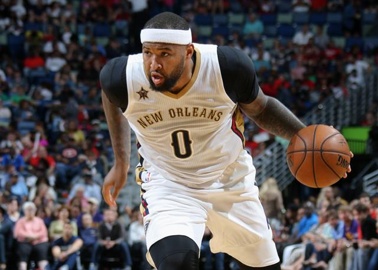

|
|---|
| 首页 | 新闻 | 球队 | 球员 | 数据 | 更多 |
|---|
 |
|---|
北京时间10月25日，《露天看台》消息，近期接受ESPN记者马克-斯皮尔斯采访时，鹈鹕中锋考辛斯承认，自己原本有机会更早离开国王。
考辛斯说：“我最后悔的是，我原本有机会（更早走），为什么那时候没抓住机会呢。我当时挣扎过，我还想给球队一次机会。我的团队告 诉我不该留下，我那时候还抱着顽固和忠诚的想法，我还想再试试。”
国王前主帅卡尔在接受《萨克拉门托蜜蜂报》采访时曾说自己后悔说出“国王队没有不可交易球员”这样的话，他没想过考辛斯有会被 交易的可能性。
最终考辛斯在2017年全明星期间被交易到鹈鹕，北京时间周五，考辛斯将首次以客队球员身份来到国王新主场黄金一号球馆。
考辛斯说：“我很兴奋在那些球迷面前打球，然后看看他们的反应。不过我不会把这当成复仇之战，我在现在的球队不错，感觉很开心。 我们有赢球的机会，有目标，所以我很开心。”
今天跟开拓者的比赛，考辛斯在戴维斯伤退的情况下，独得39分13个篮板。